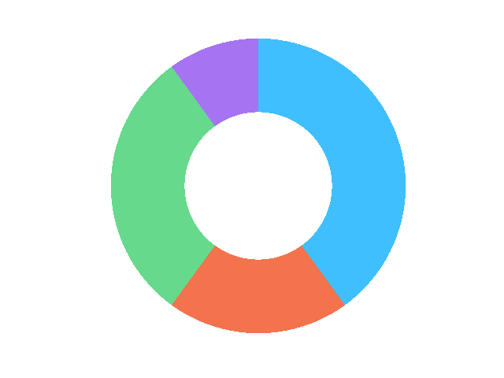

Native Scene/Canvas and Python facade exports show no Cartesian grid, axes or ticks. The native footer retains its series swatch. Category/value labels are absent. Native and facade padding differ; full image parity is not asserted.

Actual 640×480 exports, local Chrome at 1400×900, scale 1. Revision eed5663db962acc448a8e0c0c79ae0abd63a5eee; scoped source 330b195fcb8ca282bc821318825a89ffdcfcf40fb30305d966329f636719b2c2. Offscreen export verification; no native-window, physical-input or GPU claim.